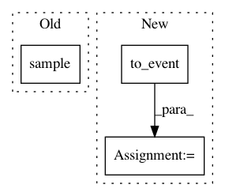

f6e75e7593d5305b1b6c9ce1a5b2eee8a3c7f38a,tests/infer/test_smcfilter.py,SmokeModel,step,#SmokeModel#Any#Any#,22
Before Change
v = pyro.sample("v_{}".format(self.t), dist.Normal(0., 1.))
with pyro.plate("plate", self.plate_size):
w = pyro.sample("w_{}".format(self.t), dist.Normal(v, 1.))
x = pyro.sample("x_{}".format(self.t),
dist.Normal(self.x_mean + w, 1), obs=x)
y = pyro.sample("y_{}".format(self.t),
dist.MultivariateNormal(self.y_mean + w.unsqueeze(-1), torch.eye(self.state_size)),
obs=y)
self.t += 1
After Change
def step(self, state, y=None):
self.t += 1
state["z"] = pyro.sample("z_{}".format(self.t),
dist.Normal(state["z"].matmul(self.A),
self.B*self.sigma_z).to_event(1))
y = pyro.sample("y_{}".format(self.t),
dist.Normal(state["z"][..., 0], self.sigma_y),
obs=y)
state["z_{}".format(self.t)] = state["z"] // saved for testing
return state["z"], y
In pattern: SUPERPATTERN
Frequency: 3
Non-data size: 3
Instances
Project Name: uber/pyro
Commit Name: f6e75e7593d5305b1b6c9ce1a5b2eee8a3c7f38a
Time: 2019-11-15
Author: fritzo@uber.com
File Name: tests/infer/test_smcfilter.py
Class Name: SmokeModel
Method Name: step
Project Name: cornellius-gp/gpytorch
Commit Name: 2ae4f8999145c3d7a7a897dff4258a625a69076b
Time: 2019-11-10
Author: gpleiss@gmail.com
File Name: gpytorch/models/pyro/_pyro_mixin.py
Class Name: _PyroMixin
Method Name: pyro_guide
Project Name: cornellius-gp/gpytorch
Commit Name: 5ea152e9f0d71e1dfdefac81cf7d60238e130c60
Time: 2020-08-04
Author: gpleiss@gmail.com
File Name: gpytorch/models/pyro/_pyro_mixin.py
Class Name: _PyroMixin
Method Name: pyro_model